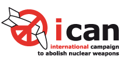
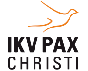
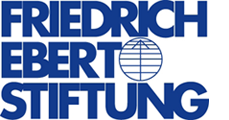

Humanitarian Disarmament: The prevention of human suffering through the prohibition or regulation of weapons that are indiscriminate in their effects or cause unacceptable harm.
Berlin Sessions on Humanitarian Disarmament
23 - 24 January 2014
The Berlin Sessions will gather European NGOs for an exchange on the concepts, the challenges, and the practice of humanitarian disarmament. In the last two decades, civil society organizations, working with governments and international organizations, have achieved remarkable progress in this field. The humanitarian justification led to the successful adoption of the Mine Ban Treaty, the Convention on Cluster Munitions and most recently, the Arms Trade Treaty. The cooperation between humanitarian practitioners and disarmament advocates saves lives.
Important challenges remain: from implementing existing obligations to assessing new technologies, from weapons of mass destruction to small arms. Civil society actors from the fields of development, international security, humanitarian assistance and international law will need to work together effectively in order to address them. The Berlin Sessions aim to enable this by strengthening the emerging humanitarian disarmament community in Europe, and by providing an introduction to humanitarian disarmament for interested professionals from adjacent fields.

 
Programme
Thursday 23 January
10:00 - 12:00
Registration & Brunch
12:00 - 12:15
Welcome by conference hosts Nosizwe Baqwa (ICAN) and Thomas Nash (Article 36)
12:15 - 12:45
Keynote: The Importance of Humanitarian Disarmament
12:45 – 14:15
Panel 1: Indiscriminate Effects of Weapons
What are the challenges facing the mitigation of weapons with indiscriminate effects? How can the humanitarian approach to indiscriminate weapons systems have effects in the field, and what is an appropriate policy to counter the use or threat of inhumane weapons systems? Organizations that combine work in the field with advocacy have a unique insight into these questions.
Speakers: Grethe Østern (Norwegian Peoples Aid)
Marion Libertucci (Handicap International)
Moderator: Susi Snyder (IKV Pax Christi)
14:15 – 14:45
Break, Snacks & Coffee
14:45 - 15:00
Lightning talk: Nuclear weapons as a global humanitarian problem
Unlike other weapons systems, nuclear weapons have been treated solely as a matter of abstract strategic politics, allowing the nuclear disarmament discourse within the international system to stagnate. A new and fresh approach is needed that addresses the actual consequences of WMD in line with the priorities of developing countries and the humanitarian agenda.
Speaker: Jacob Romer (ICAN)
15:00 - 15:15
Lightning talk: Explosive weapons in populated areas
Explosive weapons include improvised explosive devices (IEDs) as well as explosive ordnance such as mortars, rockets, artillery shells and unguided bombs. All of these weapons use blast and fragmentation to kill and injure those exposed. What can civil society do to better understand and more effectively address this problem?
Speaker:Richard Moyes (Article 36)
15:15 - 16:00
Breakout Group Mingling
16:00 - 17:30
Panel 2: Preventing Humanitarian Harm through the construction of international norms and laws
How are humanitarian disarmament treaties developed? What can we learn from previous treaty making processes and how can civil society work to ensure a successful and effective outcome?
Speakers: Anna Macdonald (Oxfam)
Gry Larsen (former state secretary, Norwegian MFA)
Alexander Kmentt (Austrian MFA)
Sara Sekkenes (UNDP)
Moderator: Torbjørn Graff Hugo (ILPI)
17:30 - 18:00
Closing Remarks
Evening reception
On the 23rd of January, ICAN and our partner organizations invite conference participants to an evening reception at the Umspannwerk.
The evening will consist of an interview with the celebrated American author Eric Schlosser (Fast Food Nation, Command and Control) and a concert by the renowned Berlin-based contemporary composer Burak Özdemir and his ensemble Musica Sequenza.
Eric Schlosser first found fame after the publication of his book Fast Food Nation, which provoked a debate about the food industry both in the US and Europe. In his latest book Command and Control, Schlosser investigates the security regime governing the US nuclear arsenal, describing an up until now unknown history of accidents, near-misses and security breaches. At the Umspannwerk, Schlosser will share his thoughts and experiences from his exploration of mankind’s darkest creation.
Burak Özdemir’s works unite the classical and the contemporary. Merging forms of classical music with references to contemporary digital music and visual culture, Burak succeeds in creating works that resonate between time. The evening’s performance Transmute has been specially created for the Berlin Sessions.
The event is open to the public
Friday 24 January
09.30 - 10.00
Opening session
10:00 – 10:15
Lightning talk: Learning from successful campaigns – International Campaign to Ban Landmines
By contributing expertise and giving strategic input, the ICBL played a major role in the international process leading to the adoption of the Ottawa Convention. The campaign was given a formal seat at the table in all of the diplomatic meetings both leading up to and during the negotiations. How can other campaigns and initiatives learn from and build upon these experiences?
Speaker: TBC
10:15 - 10:30
Lightning talk: Emerging technologies and pre-emptive campaigning
Blinding laser technology was banned in 1995, even before it came into use. Since 2013, the Campaign to Stop Killer Robots is working to ban the development and use of fully autonomous weapons before it is too late.
Speaker: Mary Wareham (Human Rights Watch)
10:30 – 12:00
Parallel Sessions Part I: Addressing Humanitarian catastrophes
The first parallel sessions will revolve around the theme Addressing Humanitarian Catastrophes. The plenary will be broken into three groups, each with two facilitators. The different groups will discuss the following:
- Evidence and Victim-Based Approaches
How have the gathering of evidence and victims’ perspectives changed humanitarian disarmament campaigns, and how can lessons from past campaigns inform civil society work on both emerging and existing disarmament discourses? Experienced civil society campaigners will partake in the discussion. - Response Capacity
What is an adequate humanitarian response to the use of the different kinds of inhumane and indiscriminate weapons, and to what degree does such a response capacitiy exist? The discussion will be informed by those with expertise of different weapons systems. - Politics as Prevention
How can international politics help prevent humanitarian catastrophes caused by inhumane weapons? Is there a humanitarian obligation to prevent catastrophes as well as to respond to them?
12:00 – 12:15
Lightning talk: Disarmament and development
Disarmament policies and processes can help to facilitate a decrease in military expenditure, defuse tensions and build trust in international and domestic post-conflict relations, impede rearmament, the development, acquisition and spread of new weapons and ultimately diminish the risk, incidence, and severity of armed conflict. How can disarmament policies feed into the post-2015 development agenda?
Speaker: (TBA)
12:15 - 12:30
Lightning talk: The next ban process?
A global ban on nuclear weapons is long overdue and with enough public pressure and political leadership, can be achieved in the near future. Mexico hosts the second conference on the Humanitarian Impact of Nuclear Weapons in February 2014. A new humanitarian disarmament process could already be in the making.
Speaker: Beatrice Fihn (WILPF, ICAN)
12:30 - 14:00
Lunch
14:00 - 15:30
Parallel Sessions Part II: Civil Society Strategies
The second parallel sessions will provide a space for participants to exchange their views on practical aspects of humanitarian disarmament campaigns. While the workshops will be introduced and facilitated by campaigners with expertise in the respective fields, the purpose is for attendees to share experiences and tackle common problems together. Participants can choose amongst the following workshops:
- Choosing the right arenaA campaign that wants to attain political results will need to calculate on which playing field(s) it will focus its energies in order to maximize the probability of success. From multilateral fora within and outside the UN to drivers of domestic change, which way to go?
- Framing How do we talk about the problem and our proposed solution in a way that is highly accessible, convincing and maximizes the political impact?
- Public events and actions Public events and actions can galvanize campaigners and increase the profile of a cause, but they can also be tricky to get right. How do we plan and execute public actions that highlight our cause?
- Divestment Divestment occurs when institutions remove financial support from select companies in order to promote certain behavior or policy. Does divestment work to promote humanitarian disarmament?
- Media outreachMedia relations and media work provides challenges for most civil society organisations, even more so when working in coalitions. How should disarmament messages be framed in order to reach a broader audience?
- Working in coalitions How can coalitions amplify the voices of their members and a plurality of constituents can strengthen the urgency of a cause?
- Working with decision-makers How do we best engage those who shape the policies we aim to influence?
15:30 - 16:00 Closing Remarks
Venue
All events will take place at Umspannwerk Kreuzberg, a refurbished landmark of 19th century industrial architecture, in Kreuzberg, Berlin’s most creative borough.
Sign up
Please use the form below to register.
The conference fee will be €40. Payment information is provided upon registration
If the registration form is not displayed, please try disabling your ad blocker or get in touch.
Contact
If you have any questions, please contact us. You can also stay in touch on Twitter and Facebook.
Jacob Romer, ICAN Germany
jacob@icanw.org
+49 151 6516 7288
Magnus Nystrand, ICAN Norway
nystrand@icanw.org
Hotels
Relexa Hotel
Reduced rate: Single 75 Euro / Double 95 Euro.
For reduced rate, reference keyword BSHD at booking.
More information: Relexa Hotel.
Booking: reservierung-berlin@relexa-hotel.de
Tel: +49 30 26 483 0
Anhalter Str. 8, 10963 Berlin